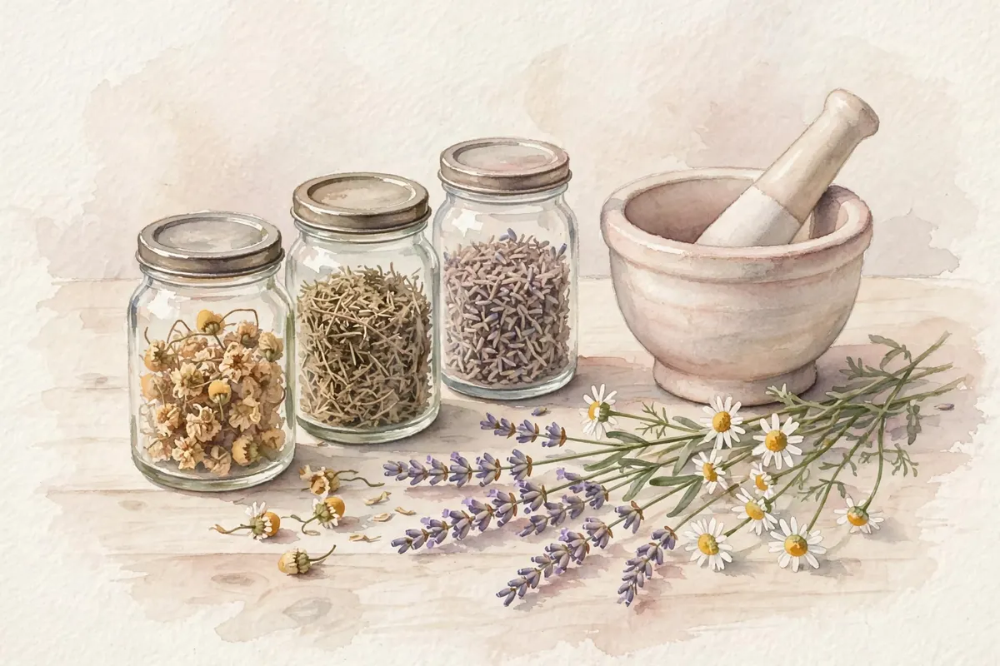

トップ ＞ インナーケア・サプリ ＞ ハーブ系サプリの原材料表示の読み方
ハーブ系サプリの原材料表示の読み方

サプリメントの売り場で「ハーブ系」と呼ばれるものを見かけると、原材料の欄に植物の名前が並んでいることがあります。カモミール、ローズヒップ、エキナセア、といった名前は、ハーブティーでもおなじみです。この記事では、ハーブ系サプリの原材料表示の読み方を整理します。特定の成分や商品をおすすめするのではなく、表示の欄のどこを見ればいいか、という順番の話です。私自身、新しいサプリを手に取るときは、まずこの表示を確認するようにしています。
まず見るのは原材料名の欄
原材料名の欄は、食品表示の基本です。原材料は、使われている量が多い順に並んでいるのが原則です。ハーブ系サプリでは、植物の名前が最初に書かれていることが多くあります。ただし、名前だけでは「どの部分が使われているのか」までは分かりません。カモミールなら花の部分なのか、葉の部分なのか。ローズヒップなら実の部分なのか。そのあたりは、原材料名のあとに続く書き方で確認します。
植物名の表記には、和名と学名が併記されているものもあります。「カモミール（マトリカリア・レクティタ）」のように、カッコ内に学名が書かれている場合です。学名が書かれていると、同じ和名でも種類の違いが分かりやすくなります。ハーブには、似た名前のものがいくつもあるため、学名の併記は、表示を読むうえでの手がかりになります。表記がない場合は、和名だけで判断することになります。
部位と抽出物の書き方
原材料名の欄で次に見るのは、部位の書き方です。「○○葉」「○○根」「○○花」「○○実」のように、使われている部分が書かれていることがあります。同じ植物でも、使う部分によって表示が変わります。部位が書かれていない場合は、「○○末」「○○粉末」といった、加工の形だけが書かれていることもあります。部位の表示があるかどうかは、そのサプリの表示の丁寧さを見る目安のひとつです。
抽出物の表示も、確認しておきたい書き方です。「○○エキス」「○○抽出物」と書かれているものは、植物から成分を取り出したものが使われています。抽出に使われた溶媒や、抽出の倍率が書かれているものもあります。「○○エキス末」のように、抽出してから粉末にしたものもあります。抽出物の表示は、原料そのものを使った「○○末」とは違う形なので、原材料名の欄で区別して読むことが大切です。
ブレンドタイプでは、複数のハーブが並んで書かれています。原材料名の欄は量の多い順なので、先頭に書かれているものが多く使われている、という読み方ができます。ただし、ブレンドの配合量そのものが書かれていることは少なく、「何が入っているか」の確認が中心になります。配合量を知りたい場合は、含有量の表示の欄をあわせて見ます。
含有量と一日の目安量の確認
原材料名の欄の次に見るのは、含有量の表示です。「1日○粒あたり、○○エキス○mg」のように、一日の目安量あたりの含有量が書かれていることがあります。ハーブ系サプリでは、植物そのものの量ではなく、抽出物の量が書かれていることが多いため、原材料名の欄とあわせて読むと、表示の全体像がつかめます。含有量の欄がない場合は、原材料名の並び順だけが手がかりになります。
一日の目安量も、あわせて確認します。「1日2粒を目安に」のように、粒数と回数が書かれています。目安量は、その商品の表示を前提に決められています。目安量より多く飲めば、その分なくなるのは早くなります。定期購入の間隔を考えるときも、この「目安量×日数＝なくなる時期」という計算が基本になります。
摂取上の注意の欄も、忘れずに確認してください。「妊娠・授乳中の方は医師に相談してください」「お薬を服用中の方は医師・薬剤師に相談してください」といった案内が書かれていることがあります。ハーブ系のものも、食品としての表示を読む、という点ではほかのサプリと同じです。体調に関する判断は、専門家に相談するのが基本です。この記事は表示の読み方の案内であり、商品ごとに表示がある場合は、そちらが優先です。
セラフィナ「ハーブの名前だけじゃなく、どの部分が使われているかまで見てみよう。表示の読み方が分かると、選ぶ目安が持てるよ」

セラフィナ｜美容の道具箱の案内役
「量と表示が分かれば、美容は失敗しない。」——セラフィナと白猫のモコが、買う前のチェックポイントを案内します。綺麗になりたい気持ちに正直に、でも表示は冷静に読むのが、このサイトの約束です。